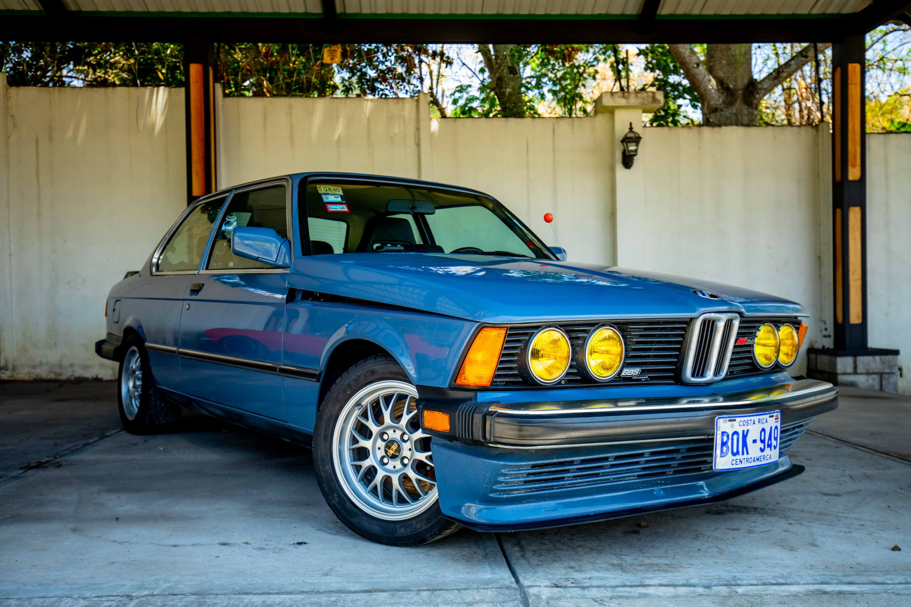

Descripción
El BMW B6 2.8 Alpina es una verdadera joya de los años 70. Modificado por Alpina, cuenta con detalles BBS y una restauración minuciosa que respeta la esencia original del vehículo. Este modelo fue una edición especial que combinaba ingeniería alemana con diseño deportivo y estilo clásico. Ideal para puristas del motor clásico y coleccionistas exigentes.